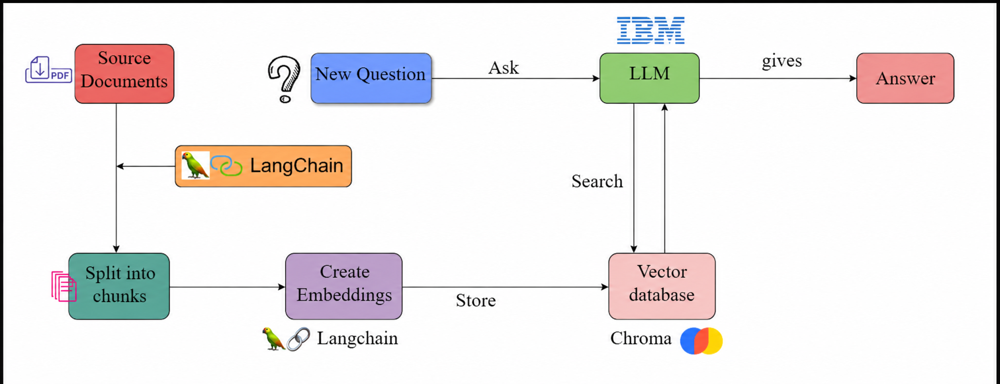

Projects
TalentScout AI
AI Talent Scouting & Engagement Agent

Designed an end-to-end agentic recruitment pipeline automating candidate sourcing, evaluation, AI-to-AI outreach simulation, and shortlist reporting with CSV, JSON, and PDF export.
Engineered a hybrid ranking engine combining skill overlap, experience, and semantic similarity; integrated a radar chart visualization, GitHub profile importer, and human-in-the-loop recruiter chat.
Added a Fairness Audit module that flags gender-proxy and location-tier score disparities, improving ranking transparency.
SFlowGCN
Low-Rate Flow Table Overflow Attack Detection in SDN
Built a real-time graph neural network attack-detection system on an SDN testbed, processing 1.17M+ packet records with a 15-dimensional, 6-feature LFTO-specific node vector.
Achieved 96.47% accuracy, 99.69% ROC-AUC, and 95.30% TPR, outperforming KNN, GRU, LSTM, and EGST baselines.
Reduced flow table overflow by 83.4% and Packet-In messages by 63.6% in live deployment, at 0.005ms inference latency.
QA Bot
RAG-Based PDF Question Answering System

Built a production-ready RAG pipeline with per-session in-memory vector indexing for complete user isolation; deployed on Hugging Face Spaces with encrypted credential management.
Achieved a 97% exact match rate, 0.9862 F1 score, and 0.9936 semantic similarity, outperforming a TF-IDF baseline by 35.8% on exact match rate.
Open-sourced the project on GitHub under the MIT License.